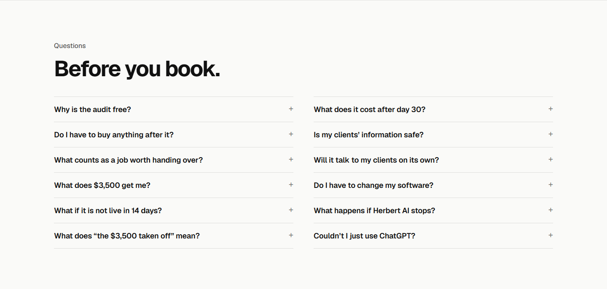
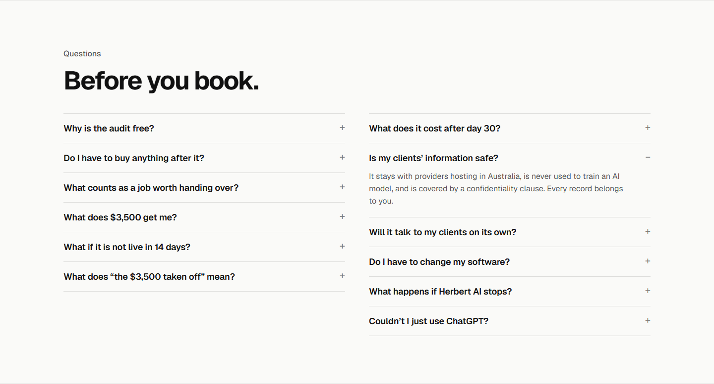
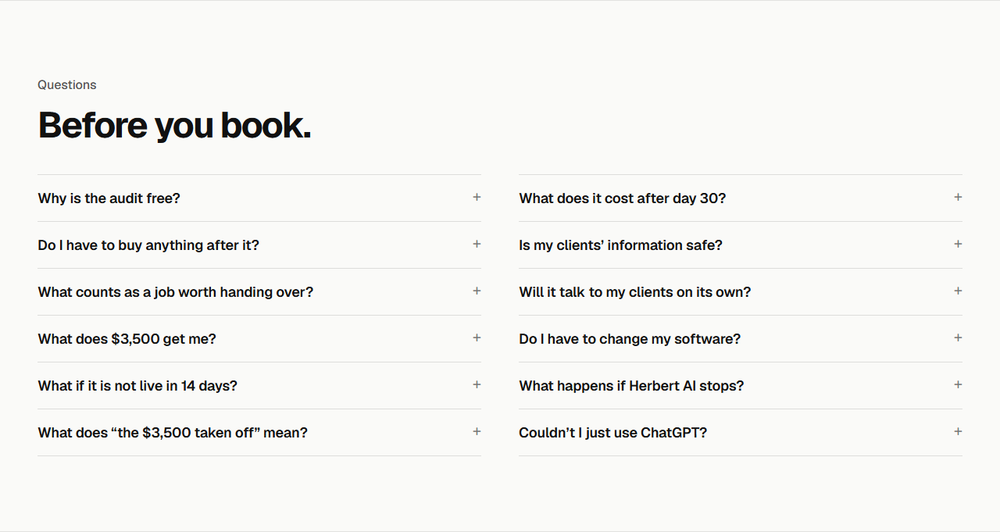
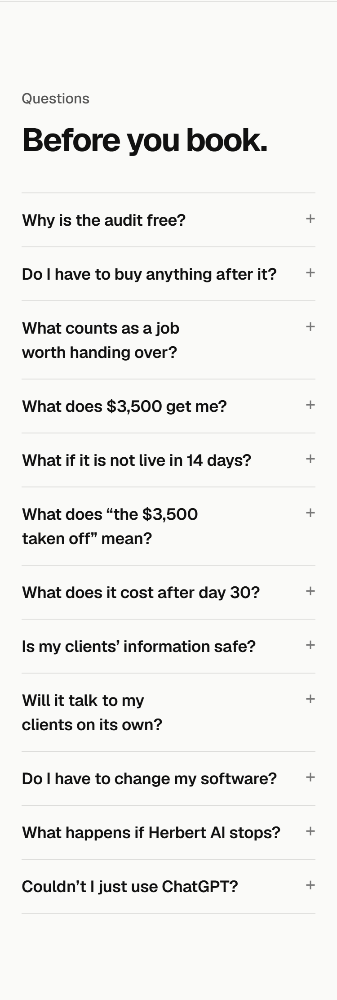
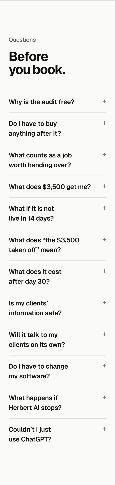

The real page at 1440, 1280, 375 and 320. The twelve questions owners ask, folded, all closed on load; the FAQPage data carries the same twelve. questions shown 12, in FAQPage 12, identical True · open on load: 0 · click opens: open True, answer shown True, minus shown True.




